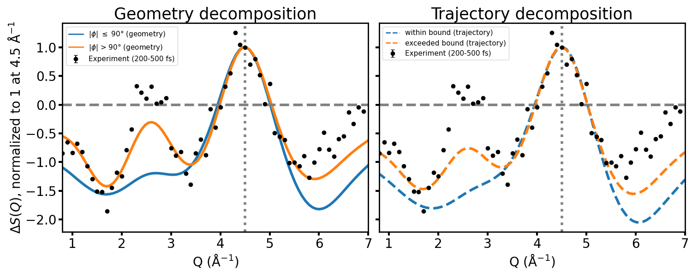

Decomposition Overlaid on Experiment

- Measured $\Delta S(Q)$ at 200–500 fs (points) against the geometry (left) and trajectory (right) decomposition components, each normalized to 1 at the 4.5 Å$^{-1}$ peak
- The data tracks the $|\phi| > 90°$ / exceeded-bound curve noticeably better through the 2.5–3.5 Å$^{-1}$ shoulder than the within-bound component — the feature the fully-averaged theory signal had washed out
- Consistent with the simulations underestimating the isomerization branching ratio; a quantitative population fit against this basis is the natural next step